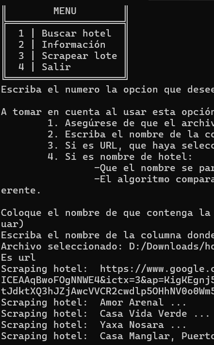
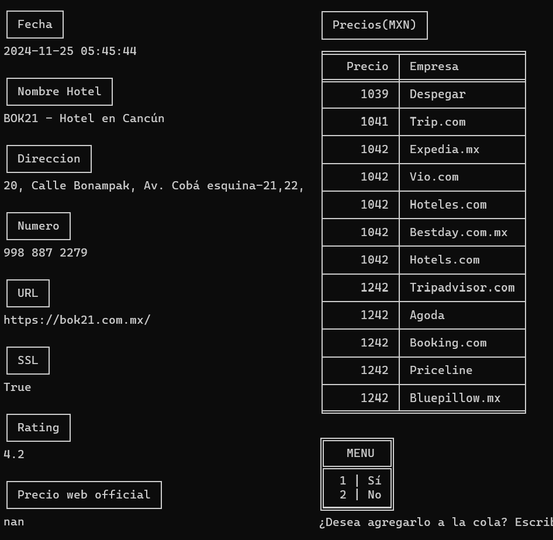
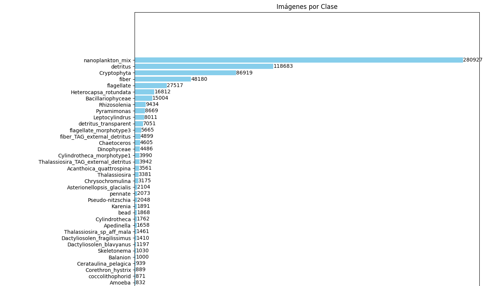
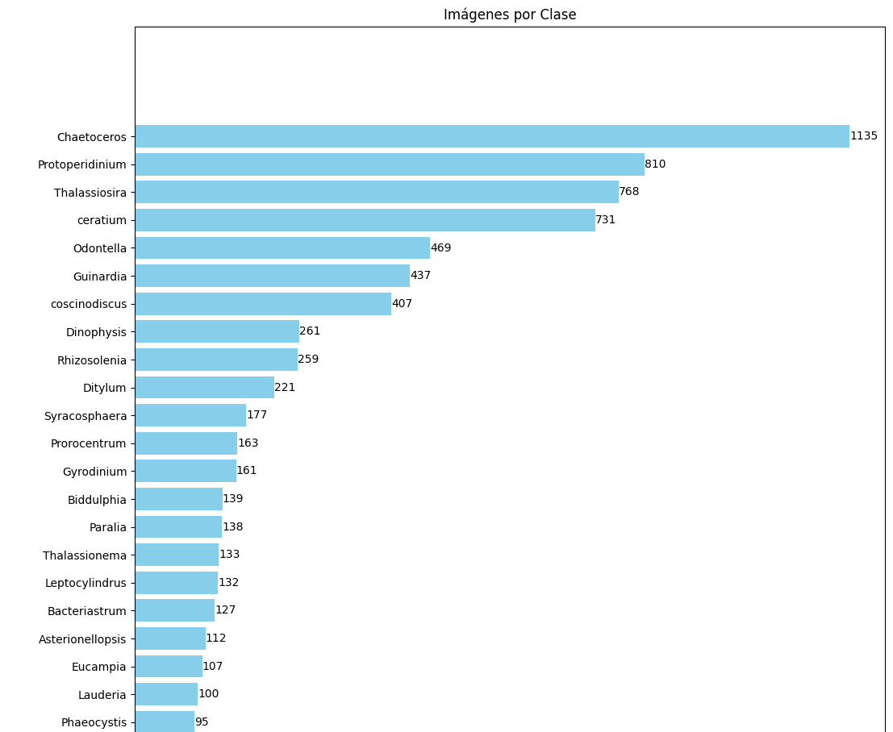

Angel Lopez
Data Engineer with an interest in machine learning. Experienced in artificial neural network modeling, web scraping, ETL processes, and automation. Knowledgeable in AWS (S3, EC2, IAM) with a B2 level of English proficiency. During my experience, I developed tools for data extraction and analysis, including web scraping applications to identify potential clients, artificial neural network models for image classification, and datasets created through web scraping.
Experience
Database Assistant
- Implemented ETL processes to clean and update the licensing database using DynamoDB in AWS.
- Designed queries to identify active licenses in Cancún.
- Automated data cleaning and report generation tasks.
Marketing Developer
- Designed and fully developed an application to search for potential client information.
- Created the user interface and planned the application's functionality.
- Enabled retrieving client data for sales in seconds.
Marketing Developer Intern
- Developed an application using web scraping techniques to extract hotel information.
- Facilitated data storage and analysis in CSV and Excel formats.
- Participated in the review and analysis of website functionality to ensure proper operation.
Education
Universidad del Caribe
Final Grade: 9.23/10
Colegio Boston Tikal
Final Grade: 9/10
Projects
-
Plankton Classifier
Purpose: Reduce the time and complexity involved in plankton classification for university students, who previously took up to 5 hours to classify a single image. A convolutional neural network model was trained using open data to classify the students' images.
Results:
- Created a dataset of 586,000 images with 72 plankton classifications.
- Trained a model with fine-tuning of InceptionV3, achieving a 95% weighted accuracy on the test dataset.
- Developed a web application using Anvil and a chatbot integrated with the OpenAI API to answer questions and generate result summaries.
- Compared the model with traditional methods: 20% accuracy in 6 seconds vs. 30% in 1 hour.
- Students found the tool more intuitive and easier to use.
Tools and Technologies: TensorFlow, scikit-learn, Google Colab Pro, Selenium, Pandas, Hugging Face (for storage and API), Anvil (for the web application).
Role in Project: Responsible for data collection and cleaning, architecture selection, modeling three proposals (single model, sequential, and hierarchical), and creating the API for predictions.
Challenges and Solutions:
- Data imbalance: Investigated solutions such as undersampling, oversampling, class weight adjustments, and callbacks to improve dataset balance.
- Lack of specialized knowledge: Received ongoing guidance from a plankton expert to understand the data and laboratory challenges.
Period: June 2024 - November 2024 (6 months).
See more on GitHub -
WebScraperHotels
Purpose: Reduce the time and workload of the marketing department by automating the tedious process of manually collecting information about potential hotel clients.
Results:
- Automatically extracted relevant information such as name, address, phone number, URL, SSL, rating, and hotel prices from various platforms.
- Reduced the time spent by the marketing manager from 2 hours to less than 5 minutes.
Tools and Technologies: Python (libraries: requests, BeautifulSoup, pandas, tabulate), openxlsx for exporting data to Excel and CSV.
Role in Project: Designed and implemented the entire solution, including UI design, data extraction and cleaning, and result storage. Also acted as a liaison to gather requirements from the marketing manager.
Challenges and Solutions:
- Location dependency: Google Hotels' results varied based on the request location, so the application was made functional for both Windows and MacOS.
- Familiarization with new tools: Researched and tested unfamiliar tools to ensure project success.
- Usability: Tested the interface with non-technical users and implemented corrections based on their feedback.
Period: July 2023 - August 2023 (1.5 months).
See more on GitHub  -
Plankton Image Dataset Creation
Purpose: This project is part of the Plankton Classifier and was developed to complement the original WHOI dataset (2006-2014) with additional images from IFCB Dashboard and PlanktonNet. The goal was to enrich classifications and image diversity, making them closer to a laboratory context.
Results:
- Collected approximately 600,000 images in 40 minutes, all organized by class.
- Significantly reduced the time required compared to manually downloading and classifying daily images.
- Enhanced the dataset with new classifications and image diversity.
Tools and Technologies: Selenium from Google Colab for image extraction, and pandas for storing, organizing, and concatenating results, grouping images into their respective classes.
Role in Project: Responsible for data extraction, cleaning, and dataset creation.
Challenges and Solutions:
- Classification with IFCB Dashboard: Required downloading a CSV file with assigned classifications and processing images published daily for two months. Sorting images by their classifications took longer than expected but was resolved with an optimized workflow using pandas.
Period: August 2024 (3 weeks).
See more on GitHub 
Skills
- ETL/ELT Pipeline Design and Implementation
- Collaboration with Cross-Functional Teams
- Data Cleaning and Preprocessing
- Data Visualization
- Performance Optimization in Big Data Environments
Certifications and Courses

- Cambridge English Entry Level Certificate Level B1, Cambridge - 2016
- Oracle Next Education F2 T5 Back-end, Oracle - April 2023 - October 2023
- Operación Aleph: Microsoft Azure SC-900, Red por la ciberseguridad - 2024
- Aspectos básicos de Azure AI (IA-900), Red por la ciberseguridad - 2024
- Inteligencia Artificial en el trabajo, Red por la ciberseguridad - 2024